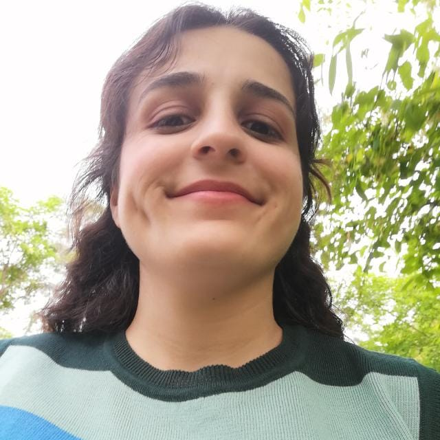

Ceren Çelik
Web Developer
Summary
Ceren Çelik is a dedicated and skilled freelance web developer
with a strong background in computer engineering and a passion for creating efficient
and user-friendly websites. With experience in both front-end and back-end development,
Ceren brings expertise in React, Python, HTML, CSS, and JavaScript. Their commitment to
problem-solving, adaptability, and teamwork ensures the successful execution of web development
projects. Ceren's diverse experiences, including cybersecurity research and server management,
contribute to their well-rounded skillset, making them a valuable asset to any web development project.
Education
- Post-Graduate Program in Wireless Networking - Sept 2023 - Present
George Brown College
- B.Sc. Degree in Computer Engineering- Sept 2018- June 2022
Zonguldak Bulent Ecevit University
Work Experience
-
Freelance Web Developer- September 2020 - Present
Responsibilities
- Understand and discuss project requirements with clients.
- Maintain clear and consistent communication throughout the project.
- Ensure responsive and user-friendly design.
- Deliver projects on time and adapt to changing client needs.
-
Ozgur Software - Software Intern - May 2020- Sept 2020
Responsibilities
- Worked on security tasks such as implementing access controls, configuring firewalls, and
monitoring for security breaches or vulnerabilities
- Collaborated with senior engineers to troubleshoot server-related problems, ensuring minimal
downtime and optimal server performance
- Assisted in optimizing server configurations and application settings for improved response times
and resource efficiency
- Assisted in the creation of scripts to streamline server provisioning and deployment processes
- Assisted in generating regular reports on server performance, uptime, and security to support
decision-making and planning
Skills
-
Technical
- Microsoft Office, Adobe Photoshop, Visual Studio, React, Python, HTML, CSS,
JavaScript, MySQL
-
Soft
- Reliable, adaptable, punctual, problem-solver, team player
Hobbies
Contact